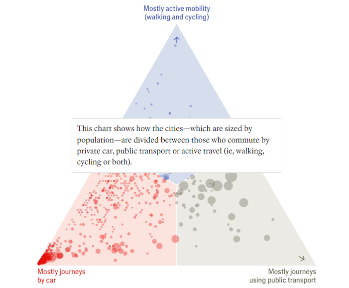
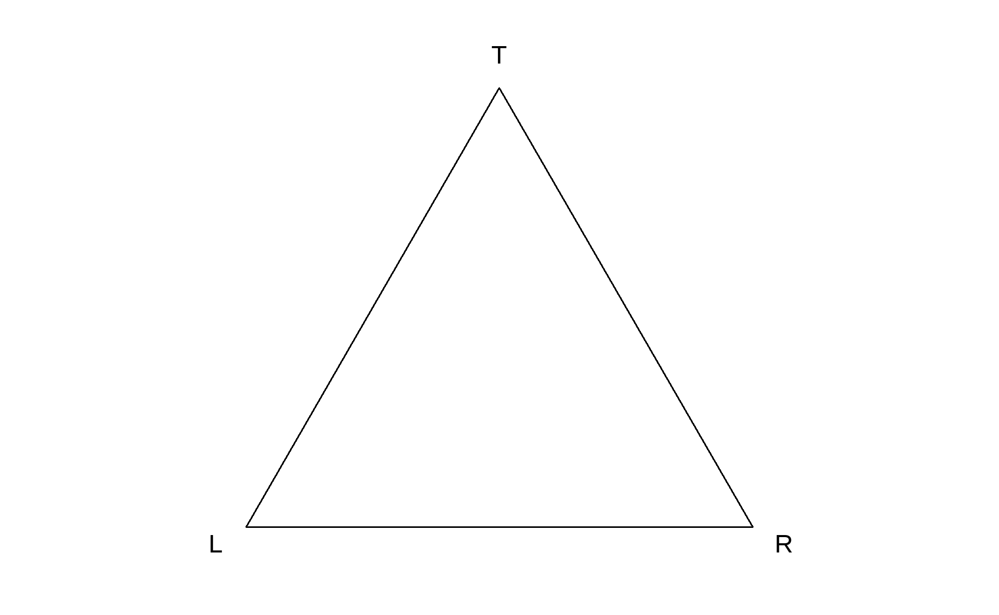
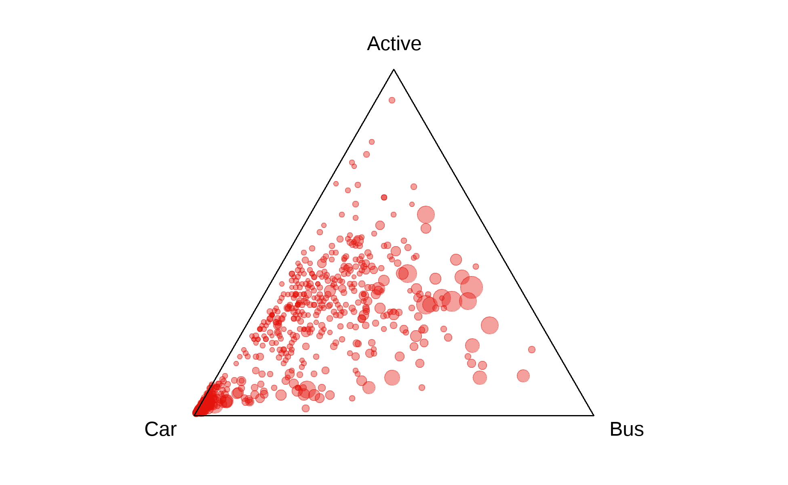
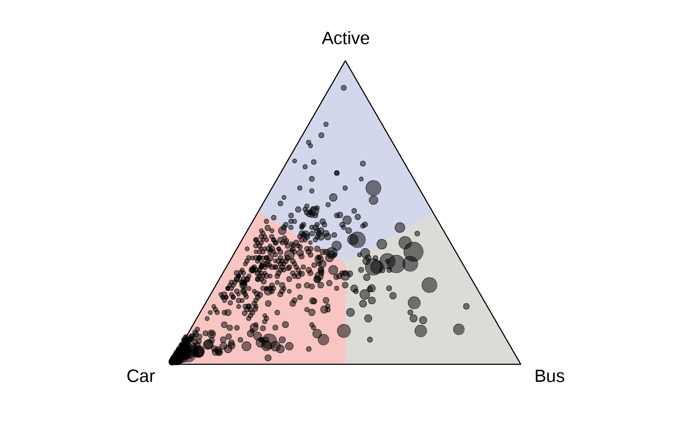
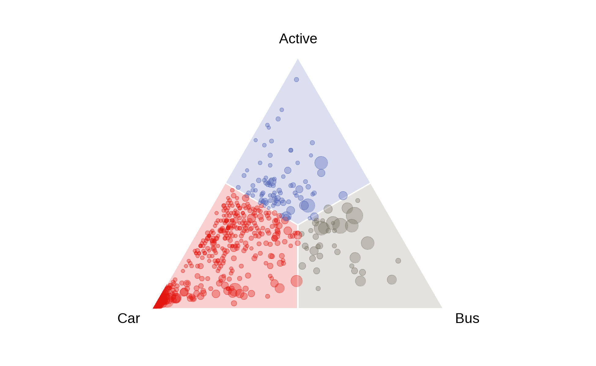
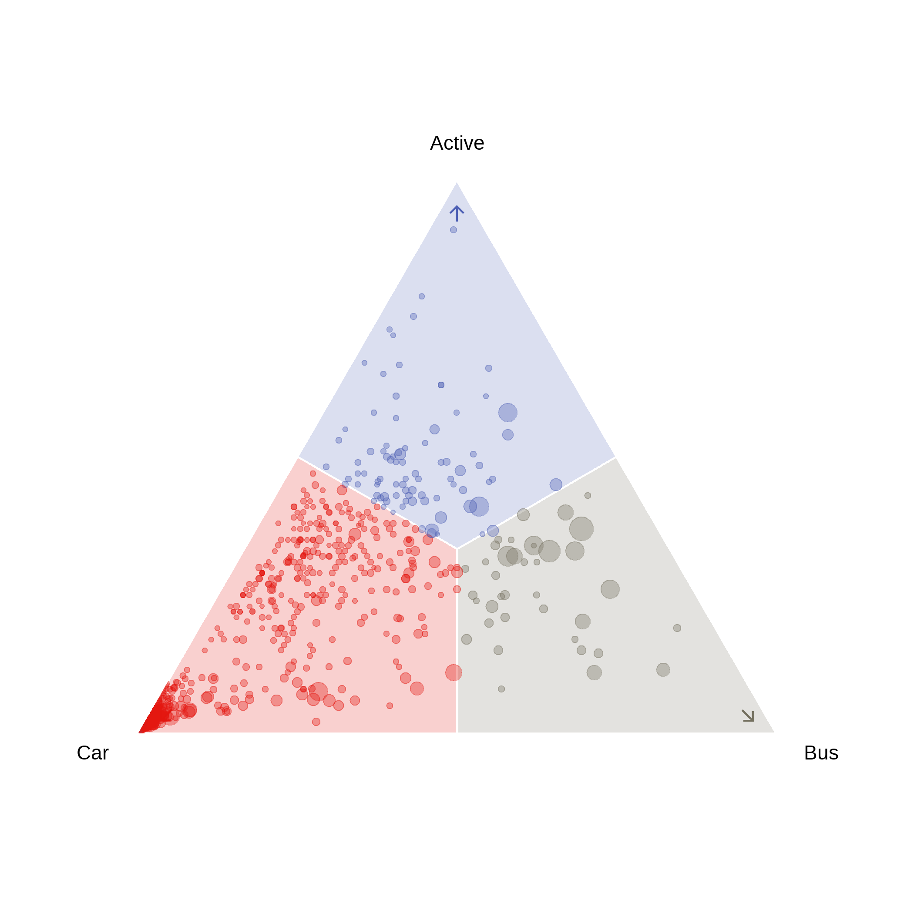
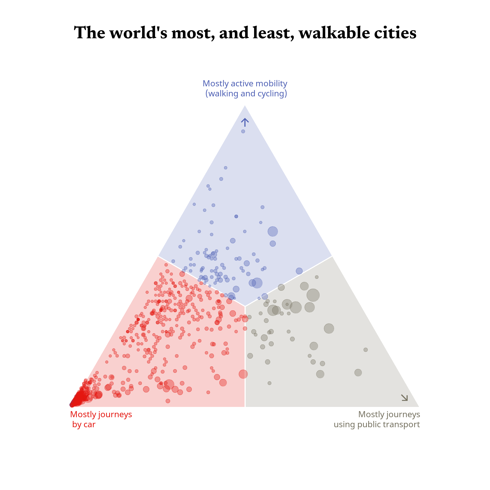
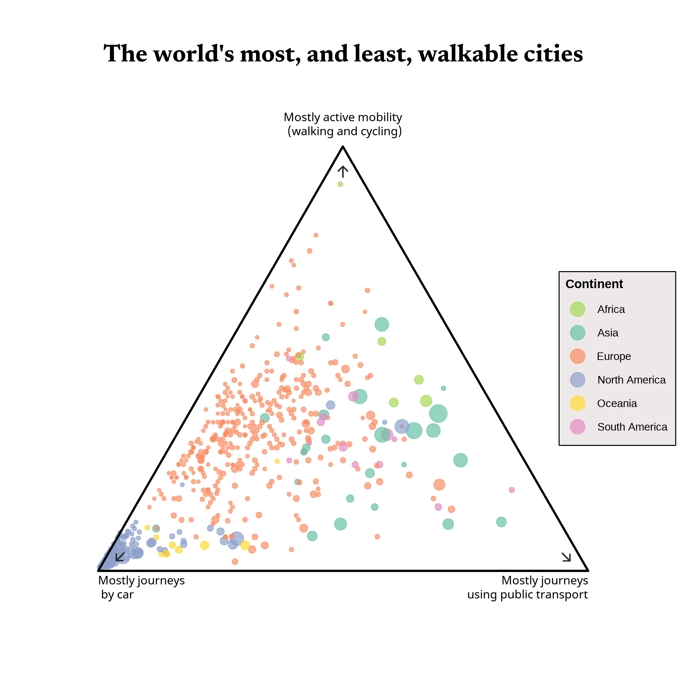
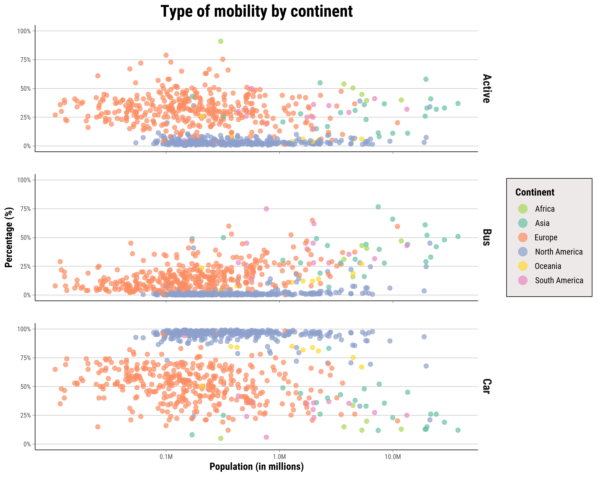

Visual representation of commuting patterns in cities worldwide, highlighting the proportions of journeys made by car, active mobility (such as walking and cycling), and public transport. The data is based on the study ‘The ABC of Mobility’ by Rafael Prieto-Curiel and Juan P. Ospina.
The Economist article reinterprets data from Rafael Prieto-Curiel and Juan P. Ospina’s study on mobility worldwide, The ABC of mobility. The study attempts to study the mobility of the inhabitants of 794 cities by grouping the types of transport into a triplet: A (active mobility), B (bus, public transport), and C (private car).
The Economist Data Team represents the data in an elegant and simple style. The article’s main graph is accompanied by an interactive table providing information about the cities, including their population and active mobility rate.
I chose this graph because it seems an original way of presenting information on three variables. Besides, I am also really interested in issues related to urban mobility and possible differences between regions. The full article is available at this link.
The original graphic is an interactive ternary graphic in which a distinctive colour represents the three types of mobility mentioned above. In addition, when hovering over each point, the city’s name associated with that point is indicated. The graph contains commentary, so as you scroll down, it is divided into different continents, and the article comments on the most salient results.

The first step is to load the libraries that will be used.
Obtaining the data was easy since it is free and available on the Cities Moving website. This website presents all the data used for The ABC mobility study, including several interactive charts showing differences across countries and continents.
The main issue with the dataset was that it is updated from time to time so it is impossible to find which are the cities and observations that were included in the original chart. The data contains a variable where you can check which are the last observations, but this does not mean that these were the observations initially included since there are new cities that were not included before. To mitigate this situation, I created a table from the information contained in The Economist’s article. Below the graph, there is a table that contains the names of the 794 cities included in the study, but the names were not written in the same way that they are written in the mobility dataset. Therefore, I changed manually the names, erasing accents and modifying the special characters. This change provided me the possibility of joining the two tables, obtaining a final data of 773 observations, which was closer to 794 than the initial filter with the first table (866 observations).
## Preparing the data frame
mobility_data <- read_csv("D:/COMPUTATIONAL SOCIAL SCIENCE/First semester/Data visualization/data/ModalShare.csv")
cities <- read_csv2("D:/COMPUTATIONAL SOCIAL SCIENCE/First semester/Data visualization/data/cities.csv")
mobility_data <- mobility_data |>
filter(LastObservation == "YES", year <= 2019) |>
distinct(ObsID, .keep_all = TRUE)
mobility <- mobility_data |>
left_join(cities, by = "City") |>
distinct(ObsID, .keep_all = TRUE) |>
drop_na(Population) Once we have the data prepared, we can start with the replication process. The initial plot is a ternary graph with a scatter plot inside of it, containing information about three variables that are located on each of the sides of the triangle. There is a specific extension of ggplot for this type of graph which is ggtern.
Creating a ternary graph could seem easy once you are adapted to having three coordinates instead of just two like in any other two-dimensional plot. The ggtern package helps a lot in facilitating the work since it uses almost the same arguments that are inside of ggplot. However, before starting to add the data, I wanted to create a simple graph to understand the dynamics of this type of visual representation.
# Empty graph
g <- ggtern() +
theme_void() +
theme_nolabels() +
theme(
legend.position = "none")
g
It could be said that each of the sides of the triangle represents a coordinate (Left, Top and Right). The centre of the triangle represents the same quantity of the three variables that could be represented.
To see how the data interact with this type of representation, we could simply add a geom point to the ternary graph in which the three variables of the study are included.
# Ternary graph with the data
g <- ggtern(data = mobility,
aes(x = Car, y = Active, z = Bus)) +
geom_point(
alpha = 0.4,
aes(size = population),
color = "#E3120B",
show.legend = FALSE) +
scale_size(range = c(1, 6)) +
theme_void() +
theme_nolabels() +
theme(
legend.position = "none")
g
It could be seen that there is still so much work to be done, but the distribution and the number of points are very similar to the original graph. For this representation, most of the arguments are not represented since this design matches The Economist’s style simplicity.
The initial graph is separated into three different regions, each having a specific colour that then would be connected to the points and the variables. These regions can be applied to the ternary graph by using geom_polygon, but firstly, the different areas should be defined in another data frame. Normally, building a specific polygon would require a specific number of points with coordinates x and y. The problem is that to fit a polygon in this graph, the points require another coordinate which is z. After having this into account, the regions are created as follows and they are added to the chart.
# Geom polygon and regions
regions <- data.frame(
x = c(1, 0.5, 0.33, 0.5,
0, 0.5, 0.33, 0,
0, 0.5, 0.33, 0),
y = c(0, 0.5, 0.33, 0,
1, 0.5, 0.33, 0.5,
0, 0, 0.33, 0.5),
z = c(0, 0, 0.33, 0.5,
0, 0, 0.33, 0.5,
1, 0.5, 0.33, 0.5),
region = c(
"Car1", "Car1", "Car1", "Car1",
"Active1", "Active1", "Active1","Active1",
"Bus1", "Bus1", "Bus1","Bus1"))
g <- ggtern(data = mobility,
aes(x = Car, y = Active, z = Bus)) +
geom_polygon(data = regions,
aes(x = x, y = y, z = z, fill = region), alpha = 0.25) +
geom_point(aes(size = population),
alpha = 0.5, show.legend = FALSE) +
scale_size(range = c(1, 6)) +
scale_fill_manual(
values = c(
"Car1" = "#e3160f",
"Active1" = "#4d5fb4",
"Bus1" = "#74705f")) +
theme_void() +
theme_nolabels() +
theme_hideticks() +
theme(
legend.position = "none")
g
The plot maintains the same visual representation as before, without ticks or labels usually included in the default themes.
The next step is to colour the points according to the colour of the region in which they are located. In order to achieve this, a function was created that assigns the different colours to the points. Several arguments are included within this function in order for it to work correctly, such as the inclusion of the function point.in.polygon from the sp package. The function created is then assigned to the data so that it can be included in the graph that is being replicated.
## Points with the colour of the regions
assign_region <- function(point, regions) {
region_list <-
split(regions, regions$region)
inside_region <-
sapply(region_list, function(region) {
sp::point.in.polygon(
point$Car, point$Active, region$x, region$y)
})
matched_region <- names(
which.max(inside_region))
if (length(matched_region) > 0) return(matched_region) else return(NA)
}
# Function to the data
mobility <- mobility |>
rowwise() |>
mutate(region =
assign_region(cur_data(), regions)) |>
ungroup()
# Graph
g <- ggtern(data = mobility,
aes(x = Car, y = Active, z = Bus)) +
geom_polygon(data = regions,
aes(x = x, y = y, z = z, fill = region),
colour = "white", linewidth = 0.6, alpha = 0.2) +
geom_point(aes(size = population, color = region),
alpha = 0.35, show.legend = FALSE) +
scale_fill_manual(
values = c("Car1" = "#e3160f",
"Active1" = "#4d5fb4",
"Bus1" = "#74705f")
)+
scale_color_manual(
values = c("Car1" = "#e3160f",
"Active1" = "#4d5fb4",
"Bus1" = "#74705f")
)+
scale_size(range = c(1, 6)) +
theme_noticks() +
theme_nolabels()+
theme(
tern.axis.ticks = element_blank(),
tern.panel.background = element_rect(fill = "white", color = NA),
panel.border = element_blank(),
plot.background = element_rect(fill = "white", color = NA),
legend.position = "none")
g 
For this section it was necessary to recreate the chart from the beginning, as the basic arguments of the ternary chart are being changed and cannot be assigned to an already created graph. It can be seen that the graph is already resembling the original one. The next steps will focus on improving the environment, trying to add the small arrows and annotations included in the original chart.
Finding the right typeface to imitate the arrows and annotations in the next two sections was easy, as The Economist Design System has an official website where they share data related to the style present in their articles. Nevertheless, the fonts used by The Economist are private and are not freely available for use in R. The fonts to be used try to be as close as possible to the original font.
The option chosen to be able to include the arrows in each corner has been the annotate function. The most challenging thing has been to find the exact location of the arrows, since like any other element of the graph, they also need information of the three coordinates (x, y, z).
library(showtext)
font_add_google("Merriweather", "Merriweather")
showtext_auto()
theme(text = element_text(family = "Merriweather"))List of 1
$ text:List of 11
..$ family : chr "Merriweather"
..$ face : NULL
..$ colour : NULL
..$ size : NULL
..$ hjust : NULL
..$ vjust : NULL
..$ angle : NULL
..$ lineheight : NULL
..$ margin : NULL
..$ debug : NULL
..$ inherit.blank: logi FALSE
..- attr(*, "class")= chr [1:2] "element_text" "element"
- attr(*, "class")= chr [1:2] "theme" "gg"
- attr(*, "complete")= logi FALSE
- attr(*, "validate")= logi TRUEg <- g +
annotate(
"text", x = 0.03, y = 0.94, z = 0.03, label = "↑",
size = 5, color = "#4d5fb4", family = "Merriweather") +
annotate(
"text", x = 0.03, y = 0.03, z = 0.94, label = "↘",
size = 5, color = "#74705f", family = "Merriweather") +
annotate(
"text", x = 0.94, y = 0.03, z = 0.03, label = "↙",
size = 5, color = "#e3160f", family = "Merriweather")
g
In this last part of code, the text annotations next to each corner are added, as well as a title for the graphic. It should be noted that the original graphic does not have a title, but what is intended to be included is the title of the article, with a strong similarity to the original font.
font_add_google("Noto Sans", "Noto")
font_add_google("Newsreader", "News")
showtext_auto()
g <- g +
labs(
title = "The world's most, and least, walkable cities") +
theme_nomask() +
theme_notitles() +
theme(
plot.title = element_text(
family = "News",
size = 18,
hjust = 0.5,
vjust = 0,
face = "bold",
color = "black"),
axis.title.x = element_blank(),
axis.title.y = element_blank(),
plot.margin = margin(0, 0, 0, 0)
) +
annotate(geom = "text",
x = c(1, 0, 0),
y = c(0, 1, 0),
z = c(0, 0, 1),
angle = c(0, 0, 0),
vjust = c(1.25, -0.5, 1.25),
hjust = c(0, 0.5, 1),
label = c("Mostly journeys \n by car",
"Mostly active mobility \n (walking and cycling)",
"Mostly journeys \n using public transport"),
color = c("#e3160f", "#4d5fb4", "#74705f"),
size = 3, family = "Noto", lineheight = 1)
g
In my opinion, creating an improvement on the original graphic is not easy. The chart is able to convey the information in a simple way and in a novel format. In order to find an improvement that adds something to the graph, it is necessary to find a correct way to show the three variables as well. However, the graphic focuses very much on the three colours present, even linking these colours with the points. The colour of the points could be used to show more information about the cities shown.
Taking these factors into account and knowing all the information available in the data set, I thought of making two improvements related to displaying more information on the graph.
The first alternative graphic maintains the original ggtern format but eliminates the colours of the regions and dots. In this case, a black colour is chosen for the annotations and the lines of the graph. On the other hand, the colours of the dots add more information to the graph, indicating the continent of each of the cities.
g2 <- ggtern(data = mobility,
aes(x = Car, y = Active, z = Bus)) +
geom_point(aes(size = population, color = continent),
alpha = 0.7, show.legend = TRUE) +
scale_color_manual(values = c(
"Asia" = "#66c2a5",
"Europe" = "#fc8d62",
"Africa" = "#a6d854",
"North America" = "#8da0cb",
"South America" = "#e78ac3",
"Oceania" = "#ffd92f")) +
scale_size(range = c(1, 6)) +
theme_void() +
theme_nolabels() +
theme_hideticks() +
theme_notitles() +
guides(
size = "none",
color = guide_legend(override.aes = list(size = 5))
) +
theme(
legend.title = element_text(face = "bold", size = 9),
legend.text = element_text(size = 8),
legend.box.background = element_rect(color = "black", fill = "#EEE9E9"),
legend.box.margin = margin(5, 5, 5, 5),
legend.position = c(0.9, 0.5),
plot.margin = NULL,
plot.title = element_text(
family = "News",
size = 18,
hjust = 0.5,
vjust = 0,
face = "bold",
color = "black"),
axis.title.x = element_blank(),
axis.title.y = element_blank(),
tern.axis.line = element_line(color = "black", linewidth = 0.8)
) +
annotate(
"text", x = 0.03, y = 0.94, z = 0.03, label = "↑",
size = 5, color = "#292929", family = "Merriweather") +
annotate(
"text", x = 0.03, y = 0.03, z = 0.94, label = "↘",
size = 5, color = "#292929", family = "Merriweather") +
annotate(
"text", x = 0.94, y = 0.03, z = 0.03, label = "↙",
size = 5, color = "#292929", family = "Merriweather"
) +
labs(
title = "The world's most, and least, walkable cities",
color = "Continent"
) +
annotate(geom = "text",
x = c(1, 0, 0),
y = c(0, 1, 0),
z = c(0, 0, 1),
angle = c(0, 0, 0),
vjust = c(1.25, -0.5, 1.25),
hjust = c(0, 0.5, 1),
label = c("Mostly journeys \n by car",
"Mostly active mobility \n (walking and cycling)",
"Mostly journeys \n using public transport"),
color = "black",
size = 3, family = "Noto", lineheight = 1)
g2
In order to correctly define the colours assigned to the continents, a small legend has been added. In the case of the population of the cities, the previous scale has been maintained, so it has been decided not to show this information in the legend.
The second alternative aims to move away from the three-parameter visual format to define the graph. In this way, it is intended to separate the three variables into three different scatterplots, in which the other variable represented will be the population size.
To achieve the desired visual representation, it was necessary to first modify the data and organise them in a long format. The three variables are merged into two, in this case, the names go to Transport and the values to Percentage. On the other hand, in order to be able to represent the three plots together and respecting the same scale used in the population axis, facet_grid was used together with arguments defined within the lemon package. The scale used to represent the population is intervals of powers of ten, so that all the points can be seen distributed. As there were very few cities with large populations, the normal population scale accumulated many points to the left of the axis, preventing relevant results from being seen.
mobility_long <- mobility |>
pivot_longer(
cols = c(Car, Active, Bus),
names_to = "Transport",
values_to = "Percentage"
)
font_add_google("Roboto Condensed", "Roboto")
showtext_auto()
p <- ggplot(mobility_long, aes(x = population, y = Percentage, color = Continent)) +
geom_point(size = 2.5, alpha = 0.7) +
facet_rep_grid(Transport ~ ., scales = "fixed") +
theme_minimal() +
labs(
title = "Type of mobility by continent",
x = "Population (in millions)",
y = "Percentage (%)",
color = "Continent") +
scale_x_log10(
breaks = c(1e5, 1e6, 1e7, 1e8, 1e9),
labels = label_number(scale = 1e-6, suffix = "M")
) +
scale_y_continuous(
limits = c(0, 1),
breaks = c(0, 0.25, 0.5, 0.75, 1),
labels = c("0%", "25%", "50%", "75%", "100%")
) +
scale_color_manual(
values = c(
"Asia" = "#66c2a5",
"Europe" = "#fc8d62",
"Africa" = "#a6d854",
"North America" = "#8da0cb",
"South America" = "#e78ac3",
"Oceania" = "#ffd92f")
) +
guides(
color = guide_legend(override.aes = list(size = 5))
) +
theme(
text = element_text(family = "Roboto"),
strip.text = element_text(size = 14, face = "bold"),
panel.spacing = unit(1, "lines"),
plot.title = element_text(size = 20, face = "bold", hjust = 0.5),
axis.text = element_text(size = 8),
axis.title = element_text(size = 12, face = "bold", hjust = 0.5),
panel.grid.major.y = element_line(color = "grey80", linewidth = 0.4),
panel.grid.minor.y = element_blank(),
panel.grid.major.x = element_blank(),
panel.grid.minor.x = element_blank(),
axis.line = element_line(color = "black", linewidth = 0.4),
axis.ticks = element_line(color = "black", linewidth = 0.15),
#Legend arguments
legend.title = element_text(face = "bold"),
legend.text = element_text(size = 10),
legend.box.background = element_rect(color = "black", fill = "#EEE9E9"),
legend.box.margin = margin(5, 5, 5, 5)
)
p
The graphic keeps the same colours and the legend of the previous alternative. It shows the different mobility patterns according to the continent.
The information in the graph can be enhanced by creating an interactive graph. With the help of the plotly and shiny packages it has been possible to create an interactive plot in which the name of each city appears as the course passes over the points. In addition, it has been possible to add a search engine in which, by typing the name of each city, its points are highlighted and the rest are blurred.